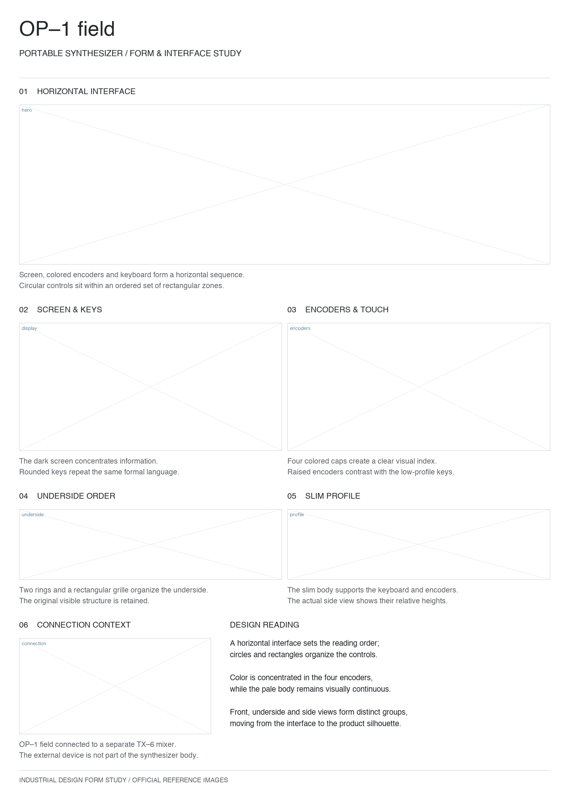
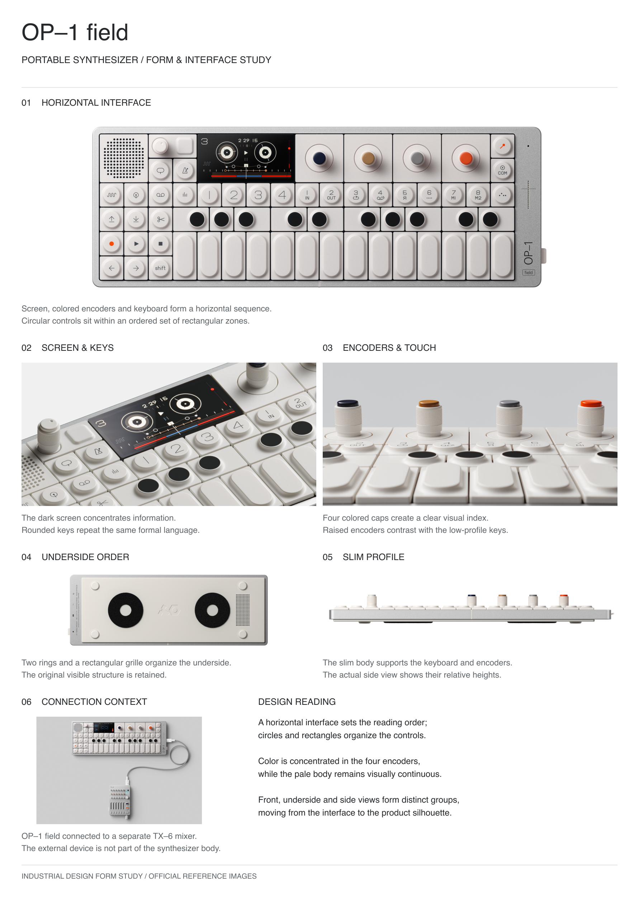

中文与英文，各自处理排字。
独立安装，也可同时安装。按展板目标语言调用，布局随实际文案重新计算。
English
Word wrapping, long model names, heading case and caption baselines.
$industrial-board-layout-enDownload English Skill v14 ↗
换产品，重新构图。
整机、细节、操作与连接关系，根据现有素材安排。素材少就精简模块，不补造缺少依据的结构。


以上均为原图排版校样，用于检查图文关系。它们不证明生图模型能稳定遵循所有约束。产品照片与商标属于对应权利人，无品牌合作或背书声明。
安装后，上传产品图试排。
- 解压所需 ZIP，将完整技能文件夹放入
~/.agents/skills/。 - 确认技能目录内直接包含
SKILL.md。 - 在 Codex 上传产品图，指定尺寸、语言和重点。
脚本渲染需要 Python 3、Pillow 和可用字体。Codex 官方技能说明
调用 $industrial-board-layout-zh。 用我的产品图规划 A3 竖版中文展板。 重点展示形态、细节与使用关系。 缺少依据就精简模块。 完成五轮检查后，输出线框、 取景说明和生图提示词。 暂不生成最终展板。
五轮线框检查后再交给生图模型；实际生图后进行三轮复核。脚本无法保证审美、产品准确性或生成文字质量。
分享材料，按平台整理。
图片、可复制文案、可编辑 SVG 已分别归档。